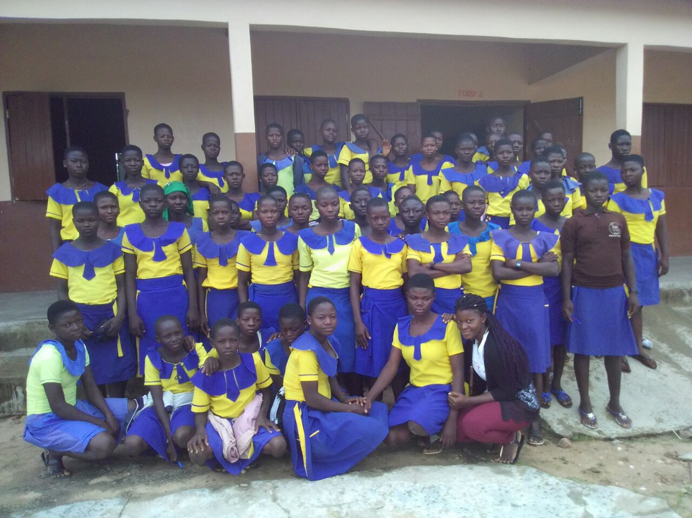
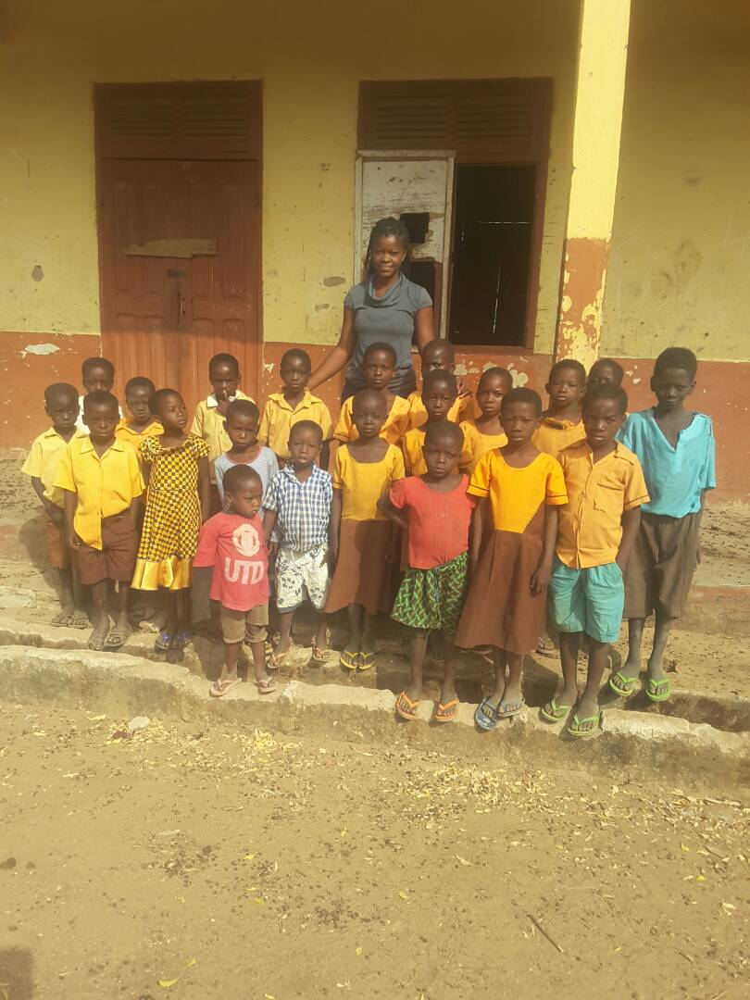
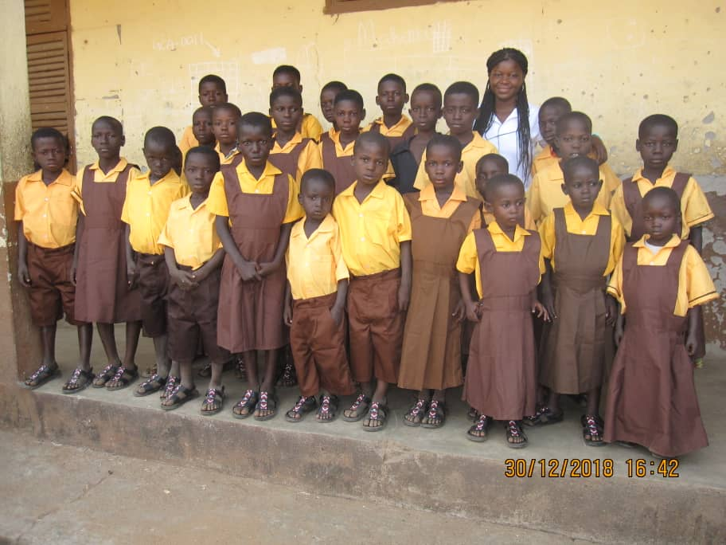
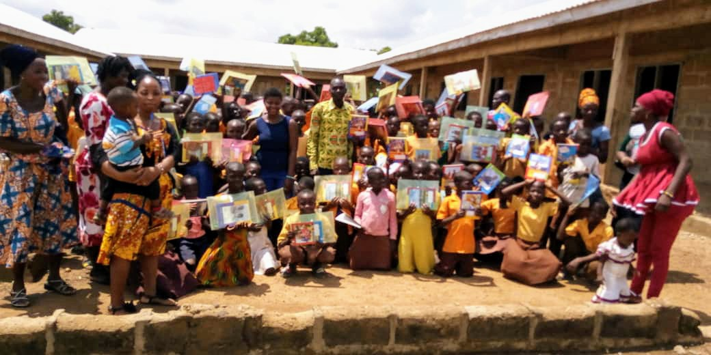
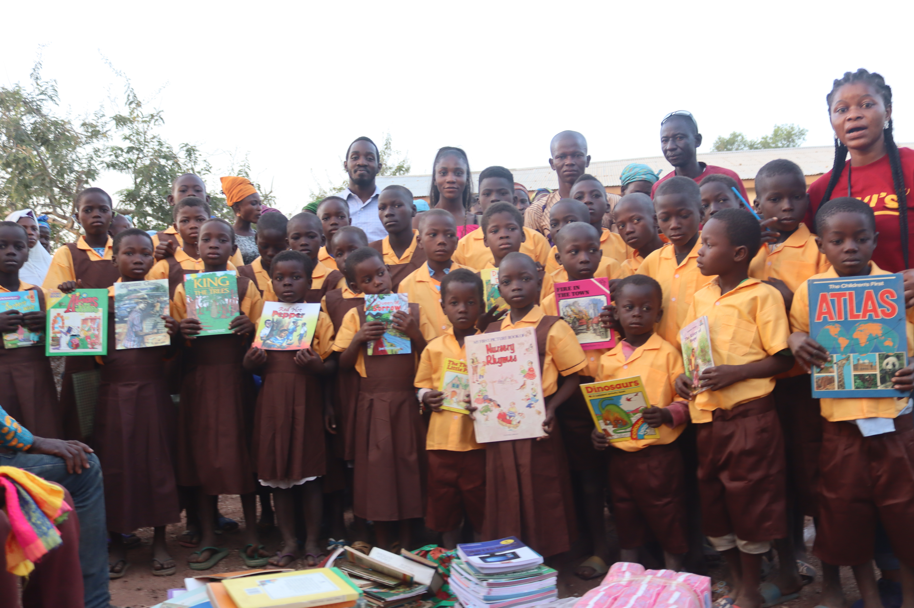
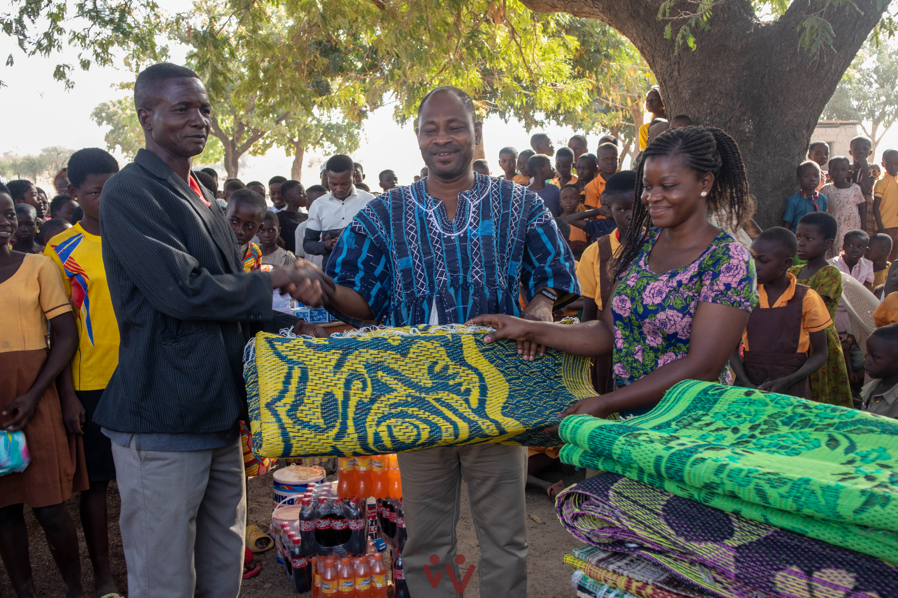
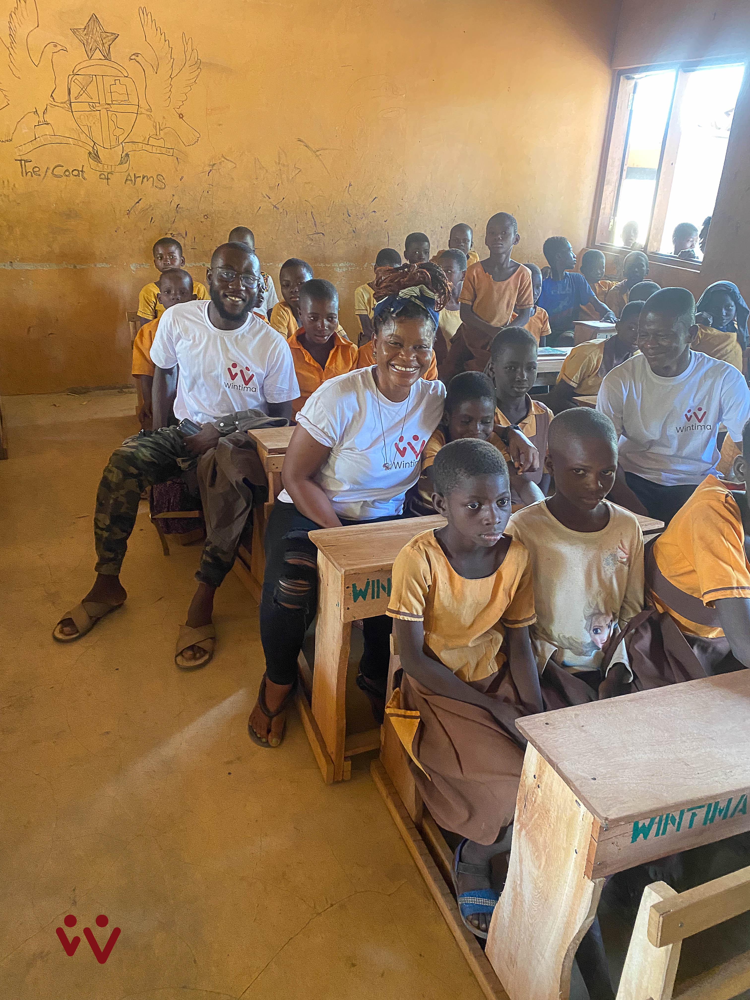
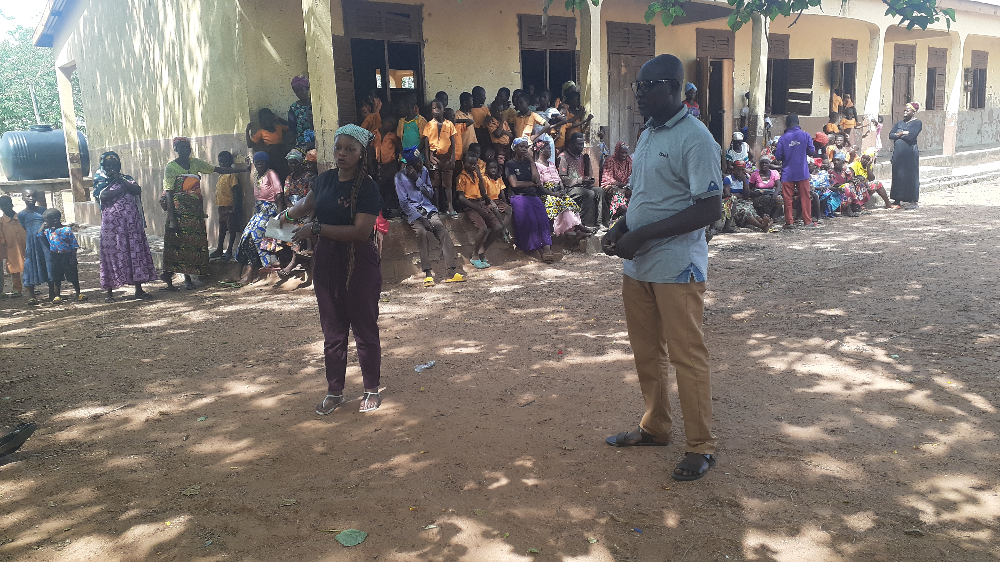

About Us
Education in the heart of Ghana
Wintima Foundation is an education-focused non-profit organisation in Ghana, registered in 2021 as a Company Limited by Guarantee. The Foundation has been in existence for the past ten years, having been founded by Janet Zeylisa Dauda in 2015.
The Foundation recognises that there are challenges that permeate Ghana's pre-senior high school education system. Though access to education has improved dramatically over the years, access alone has not managed to keep children in school. Poverty, child early and forced marriages, and teenage pregnancies all limit the utility of education for affected children.
The Foundation has taken an active interest in children from rural and deprived communities in Ghana. Our aim is to ensure that children in pre-senior high school have access to quality education — taking a holistic approach that embeds physical support and mental and emotional care to make children feel safe and motivated enough to stay in school and study.
What We Do
Our outreaches focus on
Over the years, a small group of volunteers — who have grown into a community of fully-fledged members — gather and distribute donations to enable children to stay, and enjoy being, in school.
Past Projects
A decade of impact
Distribution of study materials — books, pencils, erasers — to school children.
Follow-up: Students are doing well, though only a handful made it to Junior High School. Students need more mentors and learning materials, especially books.

A project on school dropout and early marriages — a mentorship session for school children and the formation of the "Change Makers Girl Club."
Follow-up: Efforts to sponsor two girls back to school were unsuccessful due to lack of funding. Teenage pregnancy continued to be a significant issue. The girls club collapsed due to lack of teacher supervision. Girls need more skills training, especially those who dropped out or married early.

Distribution of study materials — books, pens, pencils, exercise books — and school uniforms.
Follow-up: The school is in dire need of continued supply of learning materials and uniforms.

Distribution of school uniforms and footwear to approximately 25 school children.
Follow-up: The school needs more uniforms and footwear. Health was also flagged as a concern — many community members face vision problems due to access to unhygienic water. A borehole was requested.

Distribution of school uniforms, sanitary pads, and learning materials for school children.
Follow-up: Students called for more learning materials, particularly exercise books, as most students have nothing to write on.

Organised the first box library project — bringing books directly into the community.
Follow-up: Borehole access remains a priority. Continued communication with students and ongoing box library work planned.

Provided floor mats for classrooms without desks.
Follow-up: Dual desk campaign initiated.

Supplied 50 dual desks to the school.
Follow-up: Complete desk furnishing and supply of whiteboards remain the next goal.

School visit to assess state of affairs.
Follow-up: Complete school refurbishment with desks, roofs, doors, etc.
Every contribution keeps a child in school.